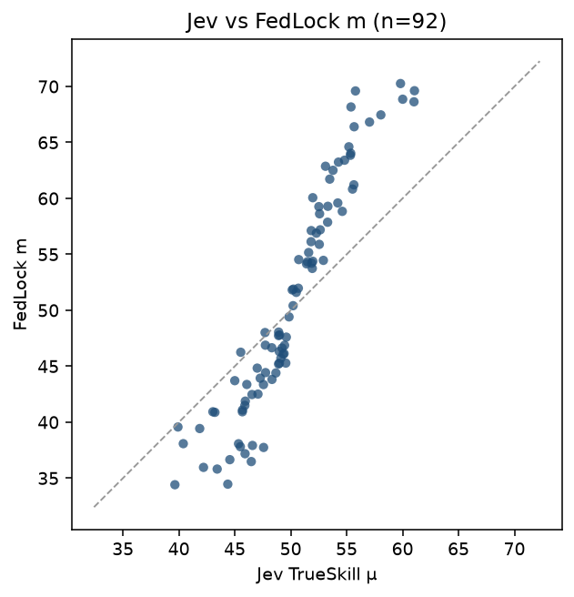
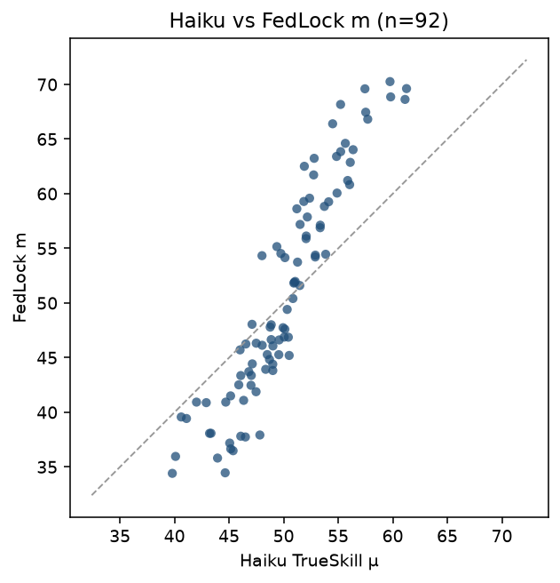
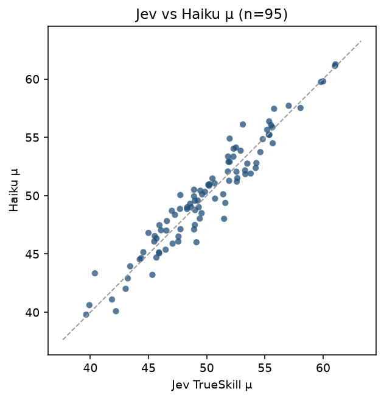
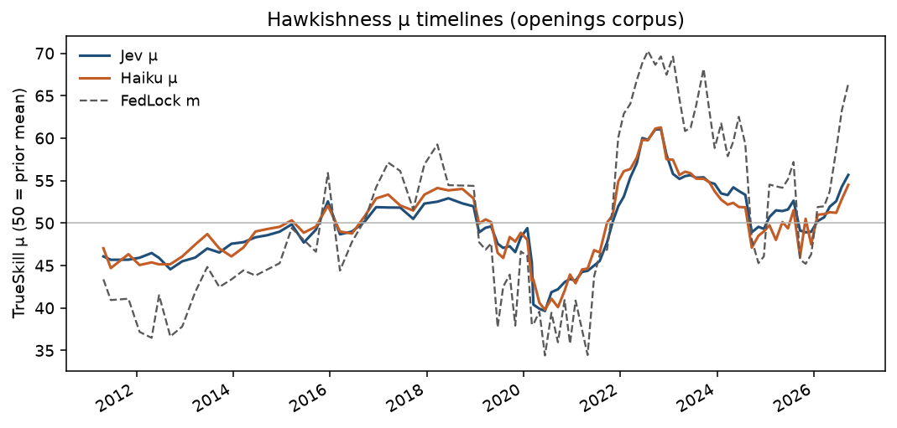
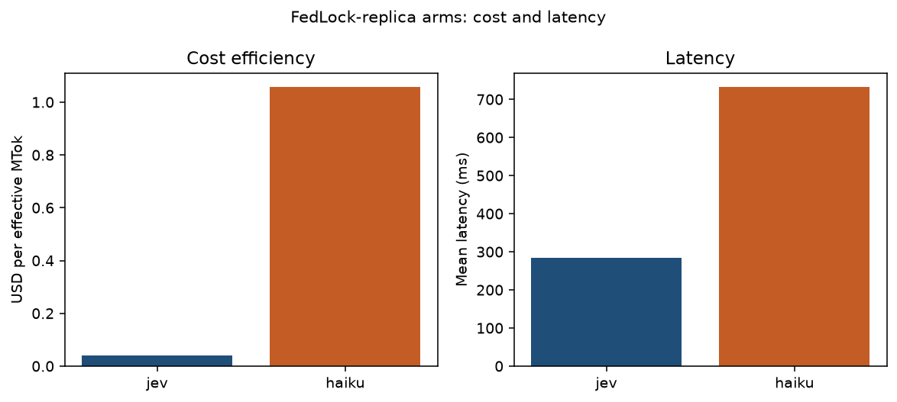
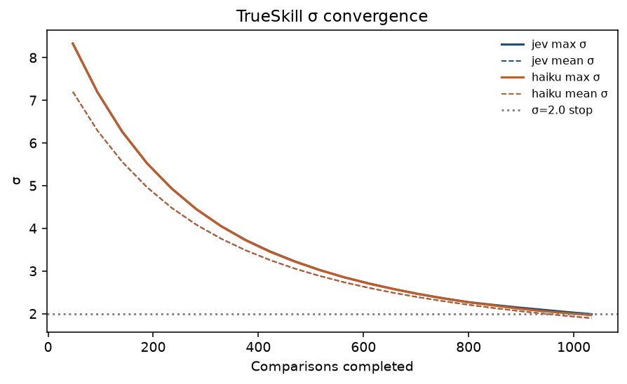

fedjev-bench — Analysis
run_id: fedjev-2026-09-20 model: jev-1.13.0 (TypeSafe SystemOne) criterion (exact): more hawkish about inflation repository: maybern-tripp-smith/fedjev-bench pages: https://maybern-tripp-smith.github.io/fedjev-bench/
Companion gate report: REPORT.md. Machine-readable results: results/gates.json. Number semantics: results/interpretation.json. FedLock relationship: results/fedlock_fidelity.md.
Abstract
Abstract
Same-day changes in the federal funds target are a convenient but incomplete label for the hawkishness of Federal Open Market Committee (FOMC) communication. Policy actions and textual stance often co-move on scheduled action days, yet need not coincide when the Committee holds the target rate. This repository reports a pre-registered evaluation of TypeSafe/Jev on chair press-conference openings: pairwise Choice under the fixed criterion string more hawkish about inflation (both presentation orders), Bradley–Terry (BT) aggregation, and a secondary direct Score pass. Seven gates probe construct validity (easy-pair discrimination), rank agreement with same-day rate moves, separation of holds from cuts on the text axis, forward-path correlation, order/name stability, and external consistency with FedLock press-conference scores. Gate 7 reports agreement with FedLock scores and does not constitute methodological replication. Five additional probes (Experiments 3–7) hold the corpus, gold pairs, and inflation-hawkishness criterion family fixed while varying the question interface—composite Scores, multi-label Nouls, paraphrase calibration, span Choice, and macro-conditioned Choice—reporting associations with bootstrap or binomial STE. Primary quantities are reported with standard errors (STE) and, where applicable, bootstrap percentile confidence intervals. Gate 4 is interpreted as evidence that same-day funds-rate changes are an incomplete label for textual hawkishness under holds—not as a claim that text “overrides” policy.
Contributions
- A frozen three-stratum gold set (extreme document pairs, Shah hawk/dove sentences, adjacent scheduled meetings) with pre-registered pass lines.
- Dual-order Choice protocol with meta stripping, BT scores with fit SEs, and first-class cost/latency artifacts.
- An honest Gate 7: Spearman agreement with FedLock raw (
m) and era-adjusted (ma) scores, with an explicit fidelity statement of what is and is not reproduced. - Uncertainty reporting (bootstrap STE for Spearman; binomial STE for inversion rates; STE for means/Brier and Gate 4 gaps).
- A head-to-head Choice comparison with Claude Haiku 4.5 under the same pairs and criterion (winner agreement primary; dollars and latency separate axes).
- Interface probes (Experiments 3–7) that vary Score composites, multi-label Nouls, criterion paraphrases, evidence-span Choice, and macro-conditioned Choice without altering gold labels.
1. Introduction
Empirical work on FOMC language often treats the realized same-day target-rate change (d_same) as a behavioral proxy for how hawkish a communication “was.” That proxy conflates two constructs:
- Behavioral / policy measure — the Committee’s voted action (hike, hold, cut; dissents).
- Textual measure — the stance expressed in the Chair’s opening remarks about inflation, the labor market, and the policy path.
On scheduled action days the two frequently align. On holds (d_same = 0), and across regimes (e.g., 2020 easing communications versus 2022–23 holds with hawkish inflation language), alignment is not guaranteed. The evaluation question studied here is therefore:
Under a fixed pairwise criterion, does a text-ranking model recover (i) obvious hawk-versus-dove document orderings, (ii) rank agreement with d_same on scheduled action days, and (iii) a text-score ordering in which holds sit above cuts—indicating that same-day rate changes are an incomplete label for textual hawkishness when the target is unchanged?
Gates were registered before any Jev output. Pass/fail applies to Gates 1, 3, 4, and 6; Gates 2, 5, and 7 are report-only or secondary.
2. Related work
| Work | Contribution | Use in this bench |
|---|---|---|
| jsort (keltokhy/jsort) | Statement ranking; published Spearman vs same-day move ≈ +0.46 | Label formulas (d_same, d_90, d_2y); Gate 3 signal (+0.30) and published reference (+0.46) |
| Shah et al. (gtfintechlab/fomc-hawkish-dovish; CC BY-NC 4.0) | Sentence-level hawk/dove/neutral labels | Stratum B; Gate 2 report-only |
| FedLock (jnathan9.github.io/fedlock) | Independent LLM pairwise + TrueSkill hawkishness scores | Gate 7 external consistency (report-only); see §6 |
3. Data
| Corpus | Path | Role |
|---|---|---|
| Chair presser openings | data/clean/statements.jsonl (~95 docs) | Document-level Choice + Score |
| Shah sentences | data/clean/sentences.jsonl | Stratum B |
| Meeting calendar + FRED labels | data/labels/meetings.parquet | d_same, d_90, d_2y, dissent counts, exclusions |
| FedLock snapshot | data/raw/fedlock/data.json | Gate 7 (m, ma, s, st) |
| FRED CSVs | data/raw/fred/ | DFEDTARU, DGS2 |
Labels (jsort-aligned): d_same = DFEDTARU[t+1] − DFEDTARU[t−1]; y_action = sign(d_same); d_90 = DFEDTARU[t+90] − DFEDTARU[t]; d_2y = DGS2[t] − DGS2[t−1].
Exclusions (pre-registered): drop 2020-03-03 and 2020-03-15 (unscheduled) and other exclude_main / unscheduled rows from main analysis; flag 2023-03-22 (SVB) without dropping.
Gold strata (frozen): A extreme n=40; B Shah n=200 (seed 20260920); C adjacent n=22. Manifest: data/pairs/PAIR_MANIFEST.md.
4. Method
Choice (primary). Criterion: more hawkish about inflation. Both orders ab/ba; probabilities mapped to gold sides and averaged. Inversion = averaged winner ≠ gold. Meta stripping via scripts/strip_meta.py.
Score (secondary). Five-level ordinal → continuous score_jev.
Bradley–Terry. Strata A+C Choice probabilities (Shah excluded). This run: n_statements=48, n_comparisons=124, converged=True, position bias γ=-0.1378. Graph is sparse; BT se in statement_scores.csv is fit uncertainty, not meeting-sampling STE.
Uncertainty. Spearman: bootstrap STE (SD of 1000 meeting resamples) + percentile 95% CI. Inversion: binomial STE √[p(1−p)/n]. Brier / Gate 4 means: STE = sd/√n; Gate 4 gap STE = √(ste_h² + ste_c²).
5. Pre-registered gates and results
| # | Gate | Pass line | Result |
|---|---|---|---|
| 1 | Easy-pair inversion (A) | ≤ 0.05 | PASS — rate=0.0000 (n=40, STE=0.0000) |
| 2 | Sentence discrimination (B) | report | inv=0.1900 STE=0.0277; Brier=0.1384 STE=0.0156 (n=200) |
| 3 | Action ranking | Spearman ≥ +0.30 | PASS — BT all=+0.623 (n=46, STE=0.096) [+0.398, +0.787]; action=+0.851 (n=24, STE=0.074) [+0.652, +0.937] |
| 4 | Holds vs cuts | mean(holds) > mean(cuts) | PASS — BT gap=+0.519 STE=0.368 (n_h=22, n_c=8) |
| 5 | Forward path (d_90) | secondary | BT=+0.357 (n=44, STE=0.154) [+0.042, +0.627]; score_jev=+0.511 (n=91, STE=0.081) [+0.336, +0.652] |
| 6 | Order/name stability | Δ inv ≤ 0.05 | PASS — Δ=0.0000 |
| 7 | FedLock consistency | report | BT vs m=+0.679 (n=46, STE=0.112) [+0.436, +0.861]; vs ma=+0.594 (n=46, STE=0.104) [+0.361, +0.770]; score_jev vs m=+0.944 (n=90, STE=0.016) [+0.900, +0.966]; vs ma=+0.774 (n=90, STE=0.044) [+0.673, +0.839] |
5.1 Inversion by stratum
| Stratum | n | inverted | inversion (STE) | mean p(gold) | mean Brier (STE) | order-flip |
|---|---|---|---|---|---|---|
| A extreme | 40 | 0 | 0.000 (0.000) | 1.000 | 0.000 (0.000) | 0.000 |
| B Shah | 200 | 38 | 0.190 (0.028) | 0.745 | 0.138 (0.016) | 0.105 |
| C adjacent | 22 | 1 | 0.045 (0.044) | 0.855 | 0.046 (0.018) | 0.091 |
Stratum A: no inversions. Stratum C inverted pair: C018. Gate 2 (19% inversion) is a sentence-level stress test, not a pass/fail of the document-level claim.
5.2 Gate 3 — rank agreement with policy actions
| Slice | BT Spearman ρ [STE; 95% CI] | n |
|---|---|---|
| All scheduled (excl crisis) | +0.623 (n=46, STE=0.096) [+0.398, +0.787] | 46 |
action_days (d_same≠0) | +0.851 (n=24, STE=0.074) [+0.652, +0.937] | 24 |
| hold_days vs (n_hawk−n_dove) | -0.192 (n=22, STE=0.202) [-0.513, +0.274] | 22 |
hold_days vs d_2y | -0.135 (n=22, STE=0.244) [-0.594, +0.349] | 22 |
Secondary score_jev: all=+0.589 (n=93, STE=0.063) [+0.460, +0.701]; action=+0.918 (n=30, STE=0.033) [+0.812, +0.953].
Action-day ρ exceeds all-scheduled ρ because holds contribute no variation in d_same (identically zero); Spearman versus d_same on holds alone is therefore undefined and not computed. Hold-day associations with dissent net and d_2y remain weak—consistent with holds mixing hawkish- and dovish-hold communications.
jsort published reference: Spearman ≈ +0.46 (STE not re-estimated here). BT action-day ρ=+0.851 (STE=0.074) clears both the +0.30 signal line and that reference point estimate.
5.3 Gate 4 — holds versus cuts on the text axis
| Score | mean holds (STE, n) | mean cuts (STE, n) | mean hikes (STE, n) | gap holds−cuts (STE) |
|---|---|---|---|---|
| BT | -0.720 (0.335, 22) | -1.239 (0.153, 8) | 1.827 (0.532, 16) | +0.519 (0.368) |
| score_jev | 1.457 (0.114, 63) | 1.036 (0.122, 9) | 3.067 (0.135, 21) | +0.421 (0.167) |
Interpretation. Under holds, d_same is identically zero and therefore cannot encode hawkish- versus dovish-hold communications. A higher mean text score on holds than on cuts indicates that the textual measure separates these regimes where the same-day behavioral label cannot. This is evidence of incomplete labeling of textual hawkishness by funds-rate changes under holds; it is not a normative claim about policy correctness. Note the BT gap 95% CI includes zero ([-0.202, +1.239]); the score_jev gap CI does not ([+0.094, +0.749]). Pre-registered pass is the point comparison mean(holds) > mean(cuts).
5.4 Gate 6 — name ablation
Baseline inversion (stripped) = 0.0000; names-in = 0.0000; Δ = 0.0000 ≤ 0.05 → PASS. Add-on cost $0.010955 (80 calls). Caveat: openings rarely embed strip-able Chair names/ISO dates; Δ=0 informs order stability more than name confounding.
6. Relationship to FedLock (fidelity)
Full note: results/fedlock_fidelity.md.
FedLock V3 (methodology): pairwise tournament with Llama 3.3 70B on anonymized speeches; macro context (Core PCE, unemployment, GDP growth, VIX) in the judge prompt; TrueSkill (μ₀=50, σ₀≈8.33 → σ<2); ~60k comparisons / ~4k speeches; fields m (raw μ), ma (era-adjusted), s (σ), n, st.
Faithfully shared: pairwise text hawkishness as a construct; name/meta stripping on our Jev Choice calls; use of FedLock press_conference scores as an external consistency check.
Not reproduced: macro-conditioned judge prompts; TrueSkill; era adjustment as Gate 7 primary (we report ma as sensitivity); full speech corpus; Llama judge; Swiss / uncertainty-targeted matching.
Implication: Gate 7 ρ measures agreement between two independent text-scoring systems on meeting-day hawkishness. It does not constitute a FedLock replication. A separate FedLock-faithful protocol replication is reported in §12 and results/fedlock_replica/FINDINGS.md.
Matching: prefer title-embedded meeting date; else FedLock d with deltas 0, +1, −1, +2. Matched meetings=92; main-analysis matched=90; same-calendar-day on d field=1; delta distribution={'0': 1, '1': 89}; match-via={'title_date': 90}; mean FedLock s on matched=1.7762.
| Contrast | ρ | STE | n | 95% CI |
|---|---|---|---|---|
BT vs m | +0.679 | 0.112 | 46 | [+0.436, +0.861] |
BT vs ma | +0.594 | 0.104 | 46 | [+0.361, +0.770] |
score_jev vs m | +0.944 | 0.016 | 90 | [+0.900, +0.966] |
score_jev vs ma | +0.774 | 0.044 | 90 | [+0.673, +0.839] |
Agreement with raw m is stronger than with era-adjusted ma, especially for score_jev. Corpus mismatch: chair openings ≠ necessarily full FedLock presser transcripts.
7. How to read these numbers
| Quantity | Meaning here |
|---|---|
Spearman ρ vs d_same | Rank agreement between meeting-level text hawkishness and same-day target move |
| Why action-day ρ > all-scheduled | Holds add no d_same variation; they dilute the pooled correlation |
Hold-day ρ vs d_same | Undefined / not computed (d_same constant 0) |
| Gate 4 gap | Mean text score(holds) − mean text score(cuts): holds look less dovish than cuts on the text axis |
| Inversion 0 on Stratum A | Easy document pairs: averaged two-order winner matched gold. Does not imply hard-pair calibration or policy forecasting |
BT se | Uncertainty from the pairwise BT likelihood, not bootstrap over meetings |
| Haiku vs Jev | Winner agreement (inversion) is primary; USD and latency_ms are separate axes. Latency is per-call API time; wall clock is concurrent |
| STE | Standard error as defined above for each estimator family |
8. Cost and latency
Pricing (jev-1.13.0): $0.042 / Mtok input; output free. Main run ≈ $0.03120 (619 calls; 524 Choice + 95 Score). Name ablation add-on ≈ $0.011. Grand total ≈ $0.042. Mean per-call latency ≈ 214 ms (concurrency 6); wall ≈ sum/6 if perfect parallel (~22 s). See results/cost.json, results/timing.json.
Haiku 4.5 comparison (Choice only)
| Jev 1.13.0 | Haiku 4.5 | |
|---|---|---|
| Stratum A / C inversion | 0.000 / 0.045 | 0.000 / 0.045 |
| Stratum B inversion | 0.190 | 0.170 |
| Choice USD | ≈ $0.024 | ≈ $0.636 (~27×) |
| Mean latency | ≈ 207 ms | ≈ 676 ms (~3.3×) |
Winner agreement nearly ties on A/C; Haiku is slightly lower-inversion on Shah with higher order-flip. Economics and latency favor Jev on this protocol; accuracy is not a large differentiator.
9. Discussion
Construct validity (Gate 1). Zero inversion on Stratum A indicates that, under the fixed criterion and dual-order protocol, Jev recovers obvious hawk-versus-dove document orderings.
Behavioral alignment on action days (Gate 3). BT ranks track d_same on scheduled action days at levels that exceed the pre-registered +0.30 signal and the jsort +0.46 published point reference, with bootstrap CIs excluding zero.
Incomplete behavioral labels under holds (Gate 4). When the target is unchanged, d_same cannot distinguish hawkish-hold from dovish-hold text. Higher mean text scores on holds than on cuts are therefore informative about the textual construct precisely where the behavioral label is uninformative. This supports treating same-day funds-rate changes as an incomplete label for textual hawkishness under holds—not as a rhetorical “disagreement” between model and market.
External textual consistency (Gate 7). Independent FedLock scores agree with Jev, especially the Score pass versus raw m. Combined with the fidelity statement in §6, this supports a shared text signal rather than FedLock replication.
Efficiency. Relative to Haiku 4.5 on the same Choice protocol, Jev offers comparable winner agreement at substantially lower listed cost and latency.
Limitations. Sparse BT graph (n=48 statements / 124 comparisons); incomplete dissent scrape; openings ≠ full pressers; single criterion and model version; Gate 4 BT gap CI includes zero. Experiments 3–7 (see §11) hold gold labels fixed and therefore do not re-identify the behavioral–textual wedge under holds; span Choice (Exp. 6) is near chance on this distractor design; macro conditioning (Exp. 7) does not overturn rate-extreme gold on Stratum A.
10. Reproducibility
git clone https://github.com/maybern-tripp-smith/fedjev-bench
cd fedjev-bench
python -m venv .venv && source .venv/bin/activate
pip install typesafe-sdk pandas pyarrow openpyxl scipy matplotlib
export TYPESAFE_API_KEY=... # never commit
python score.py --live --full
python scripts/run_name_ablation.py --live
python scripts/analyze_gates.py
python scripts/run_experiments_3_7.py # optional: Experiments 3–7Frozen inputs: data/pairs/gold_pairs.jsonl, data/clean/, data/labels/. Outputs: results/, runs/jev/. Experiment suite artifacts: results/experiments/.
11. Additional experiments (3–7)
run_id: fedjev-2026-09-20 · model: jev-latest (TypeSafe SystemOne; resolved model ids logged per call) · criterion family: inflation / hawkishness · suite cost: $0.04452752 over 385 logical calls (0 cache hits; 1,060,179 input tokens at $0.042/MTok).
These probes hold the corpus, gold pairs, and primary criterion family fixed while varying the question interface (multi-Score composite, multi-label Noul, paraphrase Choice, span Choice, and macro-conditioned Choice). Gold labels are unchanged: Stratum A extremes remain rate-path constructed; document-level d_same remains the FRED same-day funds-target move. Live calls use jev-latest via typesafe-sdk; answers are cached under runs/jev/exp_cache/. Artifacts: results/experiments/ (including FINDINGS.md, SUMMARY.json).
11.1 Experiment 3 — Composite atomic Scores
Methods. For each of 95 presser-opening statements (meta-stripped), a single SystemOne request elicited four ordered Scores (levels 0–4), packed with the Exp. 4 Nouls for cost sharing. Dimensions and equal weights:
| Dimension | Weight | Construct |
|---|---|---|
inflation_urgency | 0.25 | Urgency of the inflation fight |
tightness_preference | 0.25 | Preference for tighter policy |
reaction_toughness | 0.25 | Toughness of the reaction function / willingness to accept growth pain |
guidance_firmness | 0.25 | Firmness of forward guidance / higher-for-longer tone |
Composite = equal-weight mean of the four scores ($w_d = 1/4$). Correlations use Spearman ρ with bootstrap STE (1,000 resamples, seed 20260920) on scheduled, non-excluded, non-crisis meetings (n=93). Ablation drops one dimension and re-averages the remaining three with equal weight.
Results.
- Composite vs
d_same: ρ=0.562 (n=93, STE=0.063) - Composite vs
d_same(action days only): ρ=0.893 (n=30, STE=0.037) - Composite vs existing
score_jev: ρ=0.962 (n=93, STE=0.010) - Composite vs FedLock press-conference
m(meeting±1d match): ρ=0.957 (n=90, STE=0.012)
Leave-one-dimension-out (Δρ vs full composite on d_same):
- Drop
inflation_urgency: ρ=0.634 (n=93, STE=0.055); Δρ = +0.072 - Drop
tightness_preference: ρ=0.502 (n=93, STE=0.073); Δρ = −0.060 - Drop
reaction_toughness: ρ=0.607 (n=93, STE=0.057); Δρ = +0.045 - Drop
guidance_firmness: ρ=0.513 (n=93, STE=0.069); Δρ = −0.048
Artifacts: results/experiments/exp3_composite.json, exp3_composite.csv.
Interpretation. The four-way composite is a structured absolute score of communicated stance, not a pairwise Choice aggregate. Concordance with score_jev asks whether the richer rubric collapses to the single hawkishness Score used in the main run; concordance with d_same and FedLock m situates the composite in the same external comparisons as Gates 3 and 7. Ablation Δρ identifies which atomic construct carries most of the association with the rate move.
Limitations. Equal weights are a pre-specified convenience, not estimated from data. Score levels are verbal rubrics whose interval scaling is assumed when averaging. d_same labels policy outcomes, not text; holds can be text-hawkish, so modest pooled ρ is expected and is not by itself a failure of the composite.
11.2 Experiment 4 — Multi-label Nouls
Methods. The same packed SystemOne call returned four Nouls (yes-probability in [0,1]): signals_cut_soon, signals_higher_for_longer, acknowledges_banking_stress, blames_supply_shocks. Eras are calendar partitions (2020; 2022 hike year; 2023-03-22 SVB meeting; other 2023; 2024; 2025–26; residual). Multi-label cases are documents with at least two Nouls ≥ 0.6. Pairwise Spearman among Nouls documents mutual non-exclusivity.
Results. Mean Noul by era:
- 2020 (n=9): cut_soon=0.24, higher_for_longer=0.05, banking_stress=0.18, supply_shocks=0.20
- 2022_hikes (n=8): cut_soon=0.03, higher_for_longer=0.77, banking_stress=0.04, supply_shocks=0.49
- 2023_SVB (n=1): cut_soon=0.12, higher_for_longer=0.61, banking_stress=0.99, supply_shocks=0.08
- 2023_other (n=7): cut_soon=0.07, higher_for_longer=0.89, banking_stress=0.20, supply_shocks=0.07
- 2024 (n=8): cut_soon=0.46, higher_for_longer=0.60, banking_stress=0.04, supply_shocks=0.12
- 2025_26 (n=14): cut_soon=0.29, higher_for_longer=0.44, banking_stress=0.04, supply_shocks=0.62
- other (n=48): cut_soon=0.11, higher_for_longer=0.13, banking_stress=0.09, supply_shocks=0.37
2023-03-22 (SVB) banking Noul: acknowledges_banking_stress = 0.99 (doc stmt-2023-03-22). Documents with ≥2 high Nouls: n=9 (threshold 0.6). Pairwise Noul Spearman: exp4_nouls.json (noul_pair_spearman).
Interpretation. Nouls are not mutually exclusive by construction: a text may both acknowledge banking stress and retain a higher-for-longer signal. Era means are descriptive; the SVB meeting is a targeted face-validity check for acknowledges_banking_stress.
Limitations. Era bins are coarse and unbalanced. Noul probabilities are calibrated only insofar as SystemOne’s Noul primitive is; frequentist coverage is not claimed. Supply-shock attribution can co-occur with hawkish urgency when the Committee describes shocks yet still tightens.
11.3 Experiment 5 — Calibration / paraphrase consistency
Methods. Stratum A (40 extreme pairs) × both presentation orders. Baseline instructions (main run, cached): “Which of Text A or Text B is more hawkish about inflation.” Two meaning-preserving paraphrases (exact strings logged):
- “Which of Text A or Text B argues for a tighter stance against inflation”
- “Which of Text A or Text B is less accommodative on inflation”
Metrics: inversion rate vs gold; mean |p_gold,para − p_gold,baseline|; order-flip rate per paraphrase; reliability diagram (10 equal-width bins of p_gold vs empirical non-inversion frequency) and ECE.
Results.
- Baseline: inversion=0.0 (n=40, STE=0.0); order-flip=0.0; ECE=0.0; mean p_gold=1.0.
para_tighter_stance: inversion 0.0 (n=40, STE=0.0); order-flip 0.0; mean |Δp| = 0.0; ECE = 0.0.para_less_accommodative: inversion 0.0 (n=40, STE=0.0); order-flip 0.0; mean |Δp| = 0.002250000000000002; ECE = 0.0022499999999998632.
Artifact: results/experiments/exp5_calibration.json.
Interpretation. Zero inversion under paraphrase indicates criterion-string robustness within the inflation-hawkishness family on this easy stratum. ECE and reliability bins summarize whether reported p_gold tracks empirical accuracy; large mean |Δp| with stable winners would indicate confidence instability without rank changes.
Limitations. Stratum A is deliberately easy (rate extremes); calibration on hard or adjacent pairs may differ. Paraphrases were author-chosen, not sampled from a paraphrase model. Baseline and paraphrase calls are not contemporaneous (baseline from the main-run cache).
11.4 Experiment 6 — Evidence-span Choice
Methods. 50 items (cap 50, seed 20260920): one Shah hawkish sentence as gold plus 3–5 distractors drawn preferentially from the same (year, doc_type) pool of neutrals/doves, else from the global dove/neutral pool. Choice options are span ids (S1…); instructions: “Which span is more hawkish about inflation.” No free-form generation.
Results.
- Inversion rate: 0.48 (n=50, STE=0.07065408693062278, n_inverted=24)
- Mean p(gold): 0.4836000000000001 (STE=0.05465868864963703)
- Approx. live cost: $0.00118831
Artifact: results/experiments/exp6_span_choice.json.
Interpretation. Span Choice tests whether Jev can select a hawkish inflation span among local distractors, complementary to pairwise document Choice. Chance depends on option count (3–5 distractors ⇒ 4–6 options; chance p ≈ 1/K). Realized performance is near chance on this design.
Limitations. Shah labels are sentence-level and domain-specific; “nearby” is operationalized as same year and document type, not true transcript adjacency (positional offsets are unavailable in sentences.jsonl). Distractor difficulty is uncontrolled beyond label class.
11.5 Experiment 7 — Macro-relative vs text-absolute
Methods. Stratum A × both orders. Absolute arm: text-only Choice with the main-run criterion (cached). Macro arm: state includes Text A, Text B, and macro_A / macro_B with FRED as-of each document date—core PCE (PCEPILFE 12-month YoY when available, else level), UNRATE, and DGS10 as the risk/rate proxy (VIXCLS absent from the local FRED dump). Instructions: “Which of Text A or Text B is more hawkish about inflation given the macro conditions provided for each text.” Gold remains the rate-extreme label.
Results.
- Macro-arm inversion vs gold: 0.0 (n=40, STE=0.0)
- Absolute-arm inversion vs gold: 0.0 (n=40, STE=0.0)
- Agreement rate (absolute vs macro winners): 1.0 (n=40)
- Spearman(p_gold,abs, p_gold,macro): n/a
- Mean p_gold absolute / macro: 1.0 / 0.999125
Artifact: results/experiments/exp7_macro_relative.json.
Interpretation. Disagreement between arms would isolate cases where macro context shifts the preferred text relative to a text-only reading. On Stratum A extremes, arms agree perfectly; agreement with rate-extreme gold under the macro arm is only a partial diagnostic, because gold ignores the provided macro by construction.
Limitations. Gold is not macro-conditional. Macro features are sparse (three series) and contemporaneous as-of dates may not match real-time information sets (publication lags). DGS10 substitutes for VIX. Extreme pairs may leave little room for macro to overturn an already lopsided text comparison.
11.6 Cross-experiment notes
- Cost / latency:
results/experiments/SUMMARY.json(total,by_experiment). - Caching:
runs/jev/exp_cache/; append-only answer logruns/jev/experiments_answers.jsonl. - Non-interference:
data/pairs/gold_pairs.jsonlwas not modified; no Haiku judge was used in these experiments. - Reproducibility:
python scripts/run_experiments_3_7.py(requiresTYPESAFE_API_KEY).
12. FedLock-faithful protocol replication (separate experiment)
run_id: fedjev-fedlock-replica-2026-09-20
Scope: Separate experiment on the 95 chair-opening corpus. Faithful protocol relative to FedLock V3 documentation; not a 4k-speech / ~60k-comparison scale replication. Does not replace Gate 7 (external consistency under the main BT/Score protocol).
Methods
The judge task follows FedLock V3: pairwise selection of the more hawkish monetary-policy stance conditional on macroeconomic conditions attached to each text (Core PCE from PCEPILFE year-over-year when computable else level; UNRATE; real GDP growth from GDPC1 quarter-over-quarter SAAR when available else year-over-year; VIXCLS). Texts are anonymized via scripts/strip_meta.py (speaker titles, dates, and chair surnames removed); Chair identity is not placed in judge state.
Aggregation uses Microsoft TrueSkill with priors μ₀=50, σ₀=8.33, stopping when all σ<2.0 or approximately 30 comparisons per document (global cap 2,850). Pairing is Swiss-style with uncertainty targeting (prefer high-σ players and similar μ). Soft probabilities from the judge update ratings by outcome interpolation (confidence-weighted). Presentation order of Text A/B is randomized each match.
Arms: (i) TypeSafe SystemOne Choice (jev-latest); (ii) Claude claude-haiku-4-5-20251001 with structured JSON winner and soft probabilities; (iii) published FedLock press_conference fields m, ma, s, n from data/raw/fedlock/data.json (Llama not re-invoked).
FedLock date matching (deltas 0, +1, −1, +2 on d): 92 of 95 openings matched.
Protocol deviations / notes
- Corpus is 95 chair openings (jsort-style), not FedLock’s ~4k-speech pool.
- Soft TrueSkill via outcome interpolation of rate_1vs1 under judge p_A / p_B (confidence-weighted).
- VIXCLS and GDPC1 downloaded into data/raw/fred/ for this experiment (full macro set).
- One Haiku comparison failed JSON parse mid-tournament (truncated rationale); round continued with 46 pairs. Parser later hardened.
- Both arms stopped on all σ<2.0 (~22 comparisons per document on average), below the 30/doc and 2,850 global caps.
Results
Rank agreement
- Jev↔Haiku. Spearman=+0.955 (STE=0.012; 95% CI [+0.923, +0.971]; n=95); Kendall=+0.830 (STE=0.023; 95% CI [+0.784, +0.873]; n=95).
- Jev↔FedLock m. Spearman=+0.965 (STE=0.011; 95% CI [+0.934, +0.978]; n=92); Kendall=+0.850 (STE=0.021; 95% CI [+0.806, +0.888]; n=92).
- Jev↔FedLock ma. Spearman=+0.790 (STE=0.044; 95% CI [+0.681, +0.853]; n=92); Kendall=+0.576 (STE=0.043; 95% CI [+0.492, +0.658]; n=92).
- Haiku↔FedLock m. Spearman=+0.945 (STE=0.013; 95% CI [+0.910, +0.962]; n=92); Kendall=+0.798 (STE=0.023; 95% CI [+0.753, +0.841]; n=92).
- Haiku↔FedLock ma. Spearman=+0.768 (STE=0.042; 95% CI [+0.666, +0.828]; n=92); Kendall=+0.550 (STE=0.042; 95% CI [+0.463, +0.629]; n=92).
Cost and performance
| Arm | n_comps | input tok | output tok | USD | $/MTok eff. | $/comp | lat mean / p50 / p95 (ms) | comps/s |
|---|---|---|---|---|---|---|---|---|
| jev | 1034 | 3376150 | 28768 | 0.1418 | 0.0416 | 0.000137 | 283 / 271 / 419 | 22.978 |
| haiku | 1033 | 3347688 | 48412 | 3.5897 | 1.0570 | 0.003475 | 732 / 687 / 988 | 8.156 |
Jev stop: all_sigma_lt_2; max σ=1.986; fraction σ<2=1.000.
Haiku stop: all_sigma_lt_2; max σ=1.965; fraction σ<2=1.000.
Interpretation
Spearman/Kendall concordance between Jev and Haiku under a shared FedLock-style protocol measures cross-judge stability of the relative-hawkishness construct on this openings sample. Concordance with published FedLock m / ma asks whether the same protocol family, applied to chair openings rather than FedLock’s broader speech corpus and Llama 3.3 70B judge, recovers a similar ordering of meeting-day stance. Era-adjusted ma removes quarterly means; disagreement between m and ma contrasts therefore partly reflects era composition of the 2011–2026 openings window.
Cost and latency columns are accounting facts for the listed prices (Jev $0.042/MTok input, output free; Haiku $1.0/MTok input, $5.0/MTok output). They are not accuracy claims.
Limitations
- Scale. FedLock reports ~60k comparisons on ~4k speeches; this run uses the 95 openings corpus with a ~2,850-comparison cap. Convergence to σ<2 for every document is not guaranteed at this scale.
- Document mismatch. Openings are a subset of press-conference communication; FedLock
press_conferencescores may reflect fuller presser text. - Judge stack. FedLock’s published scores use Llama 3.3 70B; this replica uses Jev and Haiku. Agreement with
m/mamixes protocol fidelity and model differences. - Soft TrueSkill. Confidence-weighted updates via outcome interpolation are a documented approximation to FedLock’s “updates by judge confidence,” not a bit-exact reimplementation of an unpublished update kernel.
- Macro vintage. FRED series are taken as-of speech date from the local dump (plus downloaded VIXCLS/GDPC1); real-time vintage differs from revised series.
Artifacts
results/fedlock_replica/trueskill_{jev,haiku}.csvresults/fedlock_replica/comparisons_{jev,haiku}.jsonlresults/fedlock_replica/cost_performance.jsonresults/fedlock_replica/agreement.jsonresults/figures/fedlock_replica_*.png(copied todocs/figures/)
Figures: results/figures/fedlock_replica_*.png (also under docs/figures/).






13. Ethics and licenses
| Asset | Status |
|---|---|
| Code | MIT |
| FOMC openings | U.S. government works; cite federalreserve.gov; no Fed endorsement |
| FRED | St. Louis Fed terms |
| Shah | CC BY-NC 4.0 — attribution; non-commercial; full dump not vendored |
| jsort | MIT |
| FedLock | Upstream site terms; snapshot for Gate 7 only |
Research instrumentation only; not investment advice.
Citation
See CITATION.